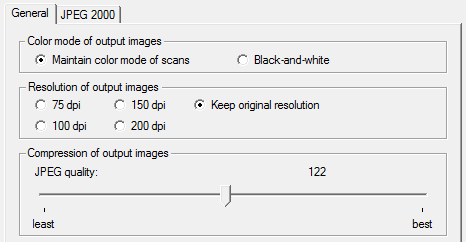
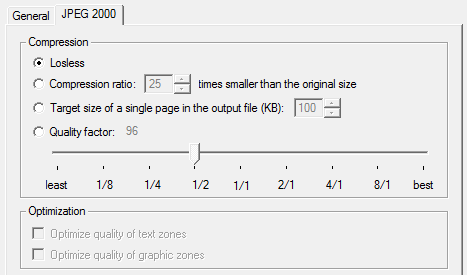
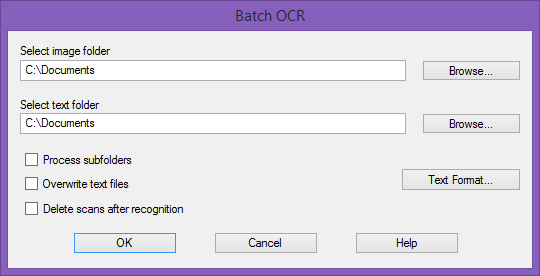
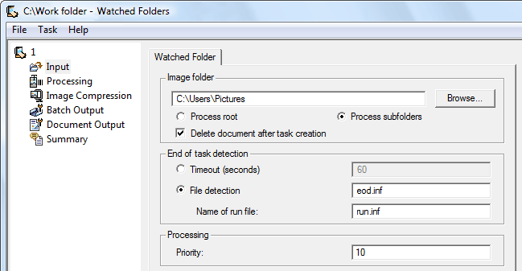
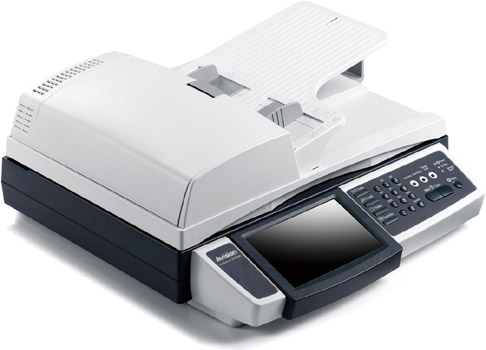
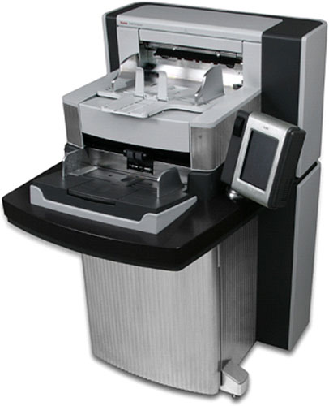

Tweet
Tweet
We’re now familiar with the power of OCR technology and we’re aware of the flexibility we have on the output side. But doesn’t it take a little extra when you have to convert large volumes of documents? Yes, it does, and “production OCR” provides the answer!
High-end OCR software, usually called “Pro” or “Corporate”, combines the features of “basic” software with extra functionality: think of user lexicons that “boost” the recognition accuracy further, the support of duplex scanners and high-end flatbed scanners (Canon, Fujitsu etc.).
But more important are advanced options for the saving of graphics and improved control over the Adobe Acrobat PDF output. When entire document collections get recaptured, the file size of your output becomes an issue. Can you select the color mode (color or black-and-white) of your graphics? Can you choose the resolution or determine the JPEG quality of the graphics? Can you save the images stored inside PDF files as JPEG 2000 images (generally speaking twice as compact as “normal” JPEG files)?
 
When the recognized documents get posted on a web site as HTML files, you may want to reduce the graphics to screen resolution (72 dpi), for instance. Let’s give another example: you generate “image-text” PDF files with bilevel graphics: you store the images in Group 4 compressed TIFF files. But save the same scans as color images and you store JPEG files by default with a high (0.8) quality. Or as JPEG 2000 images for an optimal use of the available disk space…
Other than that, the “workflow” of production OCR is different: you’ll find such features as “batch OCR” and the use of a “watched folder”.
Batch OCR executes recognition in automatic mode on large document collections saved in a specific folder. You can scan by day and read by night… Acquire all documents to be recognized; when you’re done, run the batch OCR and leave your PC to it. When you return the next day, all the documents have been recognized!

When you set up a watched folder, a specific folder is being “supervised”, monitored. Any image that gets placed or dropped in it gets recognized promptly.
With batch OCR, the OCR software executes one run on the images in a folder; when the images are processed, it’s over and out… With a watched folder, the software systematically executes the recognition on all image files that get dropped in any of the monitored folders. You can call it text recognition in “Pacman style”. Whatever you throw at the software gets eaten immediately. If the system stops for a while, throw some new wood on the fire and the sparks start flying again ’coz the beast is always hungry…
You can leave the OCR “server” running day after day… Acquire new documents each day and they will be converted in to editable text files.
Set up as many watched folders as you need: one folder may produce, say, compact PDF documents in English that get posted on your Extranet in the cloud, another creates German Microsoft Word files to be edited further. These are saved on a network drive. Or exported to Google Drive.

As you can see, such software usually comes with slick features that detect where one document ends and the next begins. A timeout is just one method to detect the end of a document: if the contents of a watched folder don’t change for, say, 30 seconds, that means you’ve completed the scanning of a document. Whatever the file names of your images may be, that collection of images gets seen as one document.
Obviously, it takes a scanner with a document feeder (“ADF”) or a high-speed document scanners (or “production scanners”) to process real volumes efficiently. When you dispose of a document feeder, the operator doesn’t have to place the pages individually on the glass plate. (Some scanners can optionally be equipped with an “add-on” document feeder for say, up to 50 pages, the faster models come with an in-built feeder that can hold up to, say, 100 pages.)
 
The “production scanners”, equipped with document feeders of up to 500 pages, can be pretty sophisticated: some dispose of mechanisms to prevent the scanner from taking in two pages at a time! One control mechanism weighs paper sheets, another checks the thickness of the paper and a third measures the light that penetrates the paper. Obviously, these methods only work when homogeneous documents get scanned: if different kinds of paper are used, the detection won’t work. That’s why some scanner use ultrasonic sensors: these can verify that the signal was reflected by only one surface — whatever the paper’s color and thickness may be.
Going places with the recognized text — More about Adobe Acrobat PDF output — Does OCR software format the text? — Does OCR software recognize tables? — Converting document collections
Home page — Intro — Scanners — Images — History — OCR — Languages — Accuracy — Output — BCR — Pen scanners — Sitemap — Search — Feedback – Contact